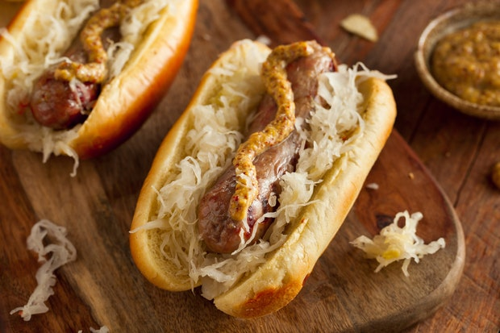

Bratwurst

This is a great dinner thats relatively easy to make.
Ingredients
- Bratwurst
- Buns
- Sauerkraut
- Musturd
- 1 Tbl Butter
Instructions
- Put a tablespoon of butter in the pan and heat for a minute.
- Once pan is hot cook bratwurst over medium heat for 10 minutes, turning occasionally.
- Add sauerkraut to pan and cook for an additional 5 minutes.
- Put brotwurst and sauerkraut in bun and top with musturd.